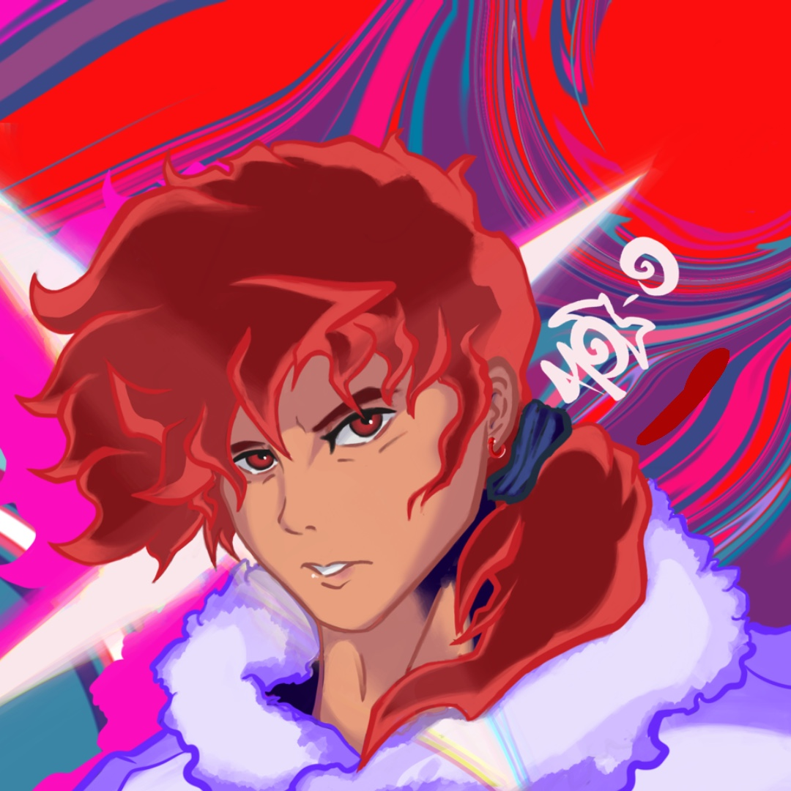

Influx cover

I have been an artist for a majority of my life. Whenever I find myself drawing, I feel like I am only getting better with each piece. That alone has caused me to want to push towards continuing my journey as a creative. Most of the works I show below are what I believe to be my best, please take a look and enjoy them as much as I do. I am currently looking towards getting into professional illustration and animation. I am deeply passionate about the art of visual storytelling, a passion that has been a guiding force throughout my life. From a young age, I found solace and joy in expressing myself through various artistic mediums, whether it be through painting, drawing, or digital illustration. Each piece I create is a reflection of my journey, encapsulating moments of inspiration, emotion, and imagination. As an artist, I constantly seek to push the boundaries of my creativity, exploring new techniques and styles to convey narratives that resonate with others. I am dedicated to pursuing my dream of making a meaningful impact through my art, inspiring others to see the world through a different lens and fostering connections through shared experiences.
Again my portfolio work

Thank you for looking
{kind=link}